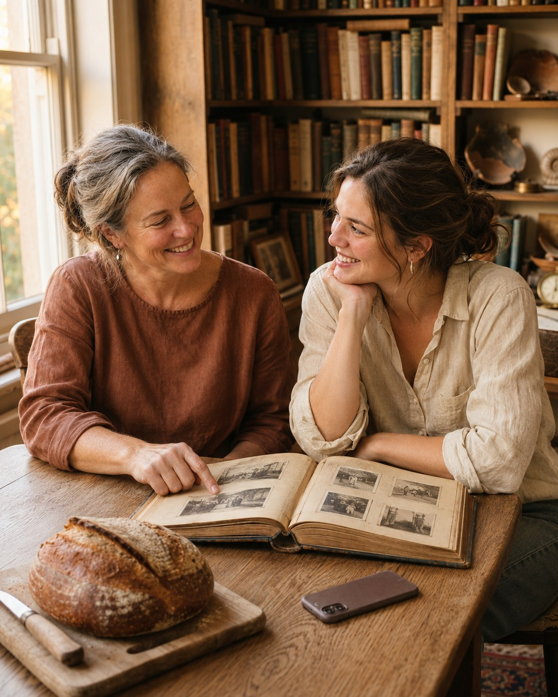

01 / Родинна пам’ять
Мамина історія
Що ви знаєте про мамине дитинство?
Знайоме сімейне фото стає приводом запитати маму про історію, якої за ним не видно.
CTAПочніть із розмови з близькою людиною.

Storina допомагає зберігати особисті та родинні спогади текстом або голосом. Бізнес-ціль кампанії — залучити людей, які перейдуть до продукту, зареєструються та створять перший запис для майбутньої книги.
Робочий ICP охоплює три групи.
Інтерв’ю допомогли визначити три ситуації для креативів.
Робочі бар’єри для перевірки — складно почати розмову чи запис, а майбутня книга здається великим проєктом.
Для порівняння рекламних повідомлень обрано два сервіси.
Для Storina перевіряю третій підхід — знайома життєва ситуація та один короткий запис. Перед запуском варто зібрати конкретні оголошення й порівняти перший кадр, обіцянку та CTA.
Пропоную розглянути три ідеї для перевірки гіпотези. Кожна починається з іншого тригера, але веде до тієї самої дії: зареєструватися в Storina та зберегти перший запис для майбутньої книги.
Що ви знаєте про мамине дитинство?
Знайоме сімейне фото стає приводом запитати маму про історію, якої за ним не видно.
CTAПочніть із розмови з близькою людиною.
Деякі миті хочеться згадувати й через роки.
Поява собаки в родині показує, як зберегти контекст важливої події: чого ви чекали й що відчули.
CTAЗбережіть цю мить і розкажіть, як усе почалося.
Дитяча радість, незважаючи ні на що.
Танець під дощем показує, що для майбутньої книги є місце й для звичайного дня. У Storina будь-яку історію можна записати текстом або голосом.
CTAДодайте цю мить у свою історію.
Ситуація. Гортаєш сімейний альбом і ловиш себе на думці, що майже нічого не знаєш про мамине дитинство.
Запитання про мамине дитинство відкриває розмову, яку легко відкладати. Карусель веде від старого фото до першого записаного спогаду.
Ситуація. Коли давня мрія здійснюється, хочеться запам’ятати, що відчувала в ту мить.
Поява собаки в родині стає приводом зберегти не лише фото, а й історію: як довго ви чекали й що відчули в день зустрічі.
Ситуація. У звичайному дні раптом трапляється мить, яку хочеться запам’ятати.
Танець під дощем показує, що для майбутньої книги є місце й для звичайного дня. У Storina будь-яку історію можна записати текстом або голосом.
Частка унікальних відвідувачів із кожного креативу, які зберегли перший спогад упродовж 7 днів після переходу. Показує, скільки залучених людей виконали цільову дію.
Кліки за посиланням, поділені на покази. Показує, як часто креатив спонукає перейти.
Кількість унікальних відвідувачів із кожного креативу. Показує, скільки людей фактично відкрили продукт після кліку.
Кількість завершених реєстрацій і їхня частка серед унікальних відвідувачів із кожного креативу. Показує, скільки людей вирішили спробувати Storina.
Частка зареєстрованих, які зберегли перший спогад у межах тих самих 7 днів після переходу. Допомагає оцінити, скільки людей почали користуватися продуктом після реєстрації.
Для платної кампанії ділимо витрати на кількість залучених користувачів, які зберегли перший запис у межах 7 днів після переходу.
До запуску фіксуємо мінімальний ефект, вибірку й критерій рішення.
Результати кампанії ще не зібрано.
Під час виробництва найкраще працювала послідовність із конкретної сцени, короткого запитання та однієї дії. Це висновок про дизайн, який ще потрібно перевірити з аудиторією. Після тесту зрозумілості — перевірити події аналітики та запустити порівняння креативів.